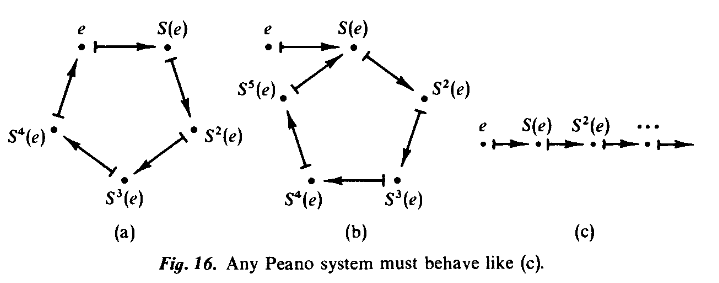

SET THEORY
Table of Contents
总体把握
naive set theory（Cantor）=> 罗素悖论(Russell's paradox) =>公理化集合论
朴素集合论（直觉上）：康托儿创立
几个基本概念：
- 基数（势）：可以理解为大小
- 一一对应：比较两个集合的大小时，如果两个集合能一一对应，那么这两 个集合基数相同或等势，均势
- 可数无穷大（可列无穷大）：如果一个集合和自然数集一一对应，那么这 个集合就是可数，或者可列的，因为可以像数数（1 2 3 …) 一样列出来,所以所有的非负偶数集都是可数的，而实数集是不 可数的（対角线法证明）
- *対角线法*：对于（0，1）之间的实数，先假设所有的实数都列出来了，那
么构造一个实数使它与上面的每一个数都不同就能推出矛盾，
够造的方法是使対角线上的数位不同。
假设 (0, 1) 之间的实数与自然数是一一对应,且对应函数为
r, 那么可以将这些 数列出来:r(1): . 1 4 1 5 9 2 6 5 3 …
r(2): . 3 3 3 3 3 3 3 3 3 …
r(3): . 7 1 8 2 8 1 8 2 8 …
r(4): . 4 1 4 2 1 3 5 6 2 …
r(5): . 5 0 0 0 0 0 0 0 0 …
…
那么对角线上的数字为 1,3,8,2,0… 那么我现在把对角线上的数字都加1(如果是 9, 那么加1后结果取0)后构造一个实数, 这个实数
d就是 0.24931…, 那么这 个实数有下列性质:d 的第一位不同于 r(1) 的第一位
d 的第二位不同于 r(2) 的第二位
d 的第三位不同于 r(3) 的第三位
d 的第四位不同于 r(4) 的第四位
d 的第五位不同于 r(5) 的第五位
…
也就是说 d 不在 r 映射中, 因此(0,1)中的实数和自然数就不是一一对应.
朴素集合论的问题：按照朴素集合论的观点，只要能够给出一个确切的条件P(x)，那么 就能定义一个集合(any collection definable is a set) {x|P(x)},但是事实上这是 不成立的，罗素悖论就是一个例子，公理化集合论的好处通过一系列的公理可以推出哪 些集合存在，哪些集合不存在，这样就可以避开那些悖论
罗素悖论（理发师悖论）
通俗表述: 一个理发师声称给城里不刮胡子的人刮胡子，而且也只给这些不刮胡子的 人刮，那么理发师该不该给自己刮胡子。(any collection definable is a set)
数学表述: P表示所有不包含自身的集合的集合（也就是所有不自吞的集合所组成的 集合），那么P是否属于自己呢（也就是P是否自吞呢）。这是一个悖论，因为如果P属 于P，那么P是自吞的，而根据P的性质，P只包含不自吞的集合，所以最后 \(P \rightarrow \lnot P，\lnot P \rightarrow P\).
\begin{displaymath} P = \{x| x \notin x \} \end{displaymath}公理化集合论
不定义什么是集合，而是通过这些公理来推导确定某些集合是存在的,某些集合是不存在 的，这些公理都是小心设计，所以避开了罗素悖论。
Extensionality Axiom(外延公理)
判断2个集合是否相等
\begin{displaymath} \forall A \forall B[\forall x(x \in A \iff x \in B) \Rightarrow A=B] \end{displaymath}Empty Set Axiom(空集公理)
存在一个唯一的空集
\begin{displaymath} \exists B \forall x \ x \notin B \end{displaymath}identical form:
\begin{displaymath} \exists B \forall x[x \in B \iff x \ne x] \end{displaymath}Pairing Axiom(偶集公理)
For any set u and v, {u, v} is the pair set whose only members are u and v.
\begin{displaymath} \forall u \forall v \exists B \forall x(x \in B \iff x=u \ \lor \ x=v) \end{displaymath}Power Set Axiom(幂集公理)
对于任意集合A，存在一个集合B，恰好以A的一切子集为元素
\begin{displaymath} \forall A \exists B (x \in B \iff x \subseteq A) \end{displaymath}some propertyies of Power set:
- \(a \subseteq A \iff a \in \mathcal{P}A\)
Union Axiom(并集公理)
a ∪ c is the set whose member belong to a or c
\begin{displaymath} \forall a \forall b \exists B \forall x(x \in B \iff x \in a \ or \ x \in b) \end{displaymath}the axiom above is the preliminary form of Union axiom.
\(\bigcup A = a1 \cup a2 \cup a3\) … (where A = {a1, a2, a3 …}) for example: \(\bigcup {a, b, c, d} = a \cup b \cup c \cup d\)
\begin{eqnarray*} \forall A \exists B \forall x[x \in B \iff \exists b (b \in A \land x \in b)] \\ x \in \bigcup A \iff (\exists b \in A) x \in b \end{eqnarray*}extremely: \(\bigcup \emptyset = \emptyset\)
Subset Axioms(子集公理)
For each formula __ not containning B, the following is an axiom:
\begin{eqnarray*} \forall t_1 ... \forall t_k \forall c \exists B \forall x(x \in B \iff x \in c \ and \ \_) \\ B = \{x \in c| \_\} \textrm{(identical to the axiom above)} \end{eqnarray*}The reason why this axiom is called subset axiom is that whatever the formula __ is, the set B is subset of c
Theorem: there is no set to which every set belongs
proof: if A is a set, we will construct a set not belonging to A
\begin{displaymath} B = \{x \in A | x \notin x \} \end{displaymath}According to the subset axiom, if A is a set then B exists.and according to the construction rule of B:
\begin{displaymath} B \in B \iff B \in A \ and \ B \notin B \end{displaymath}then if B ∈ A, we get \(B \in B \iff B \notin B\), this is a contradiction, so B ∉ A. (actually, beacause there is no set which belongs to itself, so B = A).
- Intersection(交集)
- ∩ \begin{eqnarray*} \forall a \forall c \exists B \forall x(x \in B \iff x \in c \ and \ x \in a) \\ a \cap c = \{x| x \in a \ and \ x \in c \} \end{eqnarray*}
- \(\bigcap\)
\begin{eqnarray*}
\forall x[x \in B &\iff (\forall b \in A) x \in b] \\
x \in \bigcap A &\iff (\forall b \in A) x \in b
\end{eqnarray*}
\(\bigcap \{a, b, c \} = a \cap b \cap c\)
- (relative complement)差集
\begin{displaymath}
\forall a \forall c \exists B \forall x(x \in B \iff x \in a \ and \ x \notin c)
\end{displaymath}
identical form:
\begin{displaymath} a - c = \{x| x \in a \ and \ x \notin c \} \end{displaymath}
Axiom of Choice
- first form
For any relation R, there is a function \(H \subseteq R\) with dom H = dom R.
Infinity Axiom
There exists an inductice set:
\begin{displaymath} (\exists A)[\emptyset \in A \ and \ (\forall a \in A) a^+ \in A] \end{displaymath}Algebra of sets
Commutative laws
Associative laws
Distributive laws
De Morgan's laws
Identities involving ∅
some properties
Relations and Functions
ordered pair
Definition: <x, y> is defined to be {{x}, {x, y}}
Theorem: <x,y> = <u,v> iff x=u and y=v
Cartesian product(笛卡尔积): A × B = {<x,y> | x ∈ A and y ∈ B}
Lemma: if x ∈ C and y ∈ C then <x, y> ∈ \(\mathcal{PP}C\)
if x ∈ A and y ∈ B then <x, y> ∈ \(\mathcal{PP}(A \cup B)\)
Relation
Definition: A relation is a set of ordered pairs.
Definition: R is a relation, we define the domain of R(dom R),the range of R(ran R) and the field of R(fld R) by:
- x ∈ dom R \(\iff\) ∃ y <x,y> ∈ R
- y ∈ ran R \(\iff\) ∃ x <x,y> ∈ R
- fld R = dom R ∪ ran R
Lemma: If <x,y> ∈ A, then x and y belong to \(\bigcup \bigcup A\)
we say R is a relation on A, it means that R is a subset of (A × A)
n-ary relations
The N-ARY RELATIONS are defined similar to 3-ary and 4-ary relation.
Function
Definition: a function is relation F such that for each x in dom F, there is only one y such that xFy.
partial function: if the function is X to Y, and some elements in X are undefined, then it's a partial function.
(total) function: if the function is X to Y and all elements in X are defined, then it is a total function.
we say that F is a function from A into B or map A into B(written: A ⟶ B), iff F is a function , dom F=A and ran F ⊆ B. if ran F=B then we say F is a function from A onto B or map A onto B.
Definition: A relation R is single-rooted, iff for each y in ran R, there is only one x such that xRy.
Definition:
\begin{eqnarray*} F^{-1} &=& \{ \langle u,v \rangle|vFu \} &\textrm{inverse}\\ F \circ G &=& \{\langle u,v \rangle| \exists t(uGt \land tFv) \} &\textrm{composition} \\ F \upharpoonright A &=& \{\langle u,v \rangle| uFv \land u \in A \} &\textrm{restriction}\\ F [A] &=& ran(F \upharpoonright A) \\ &=& \{v| (\exists v \in A) uFv\} \\ &=& \{F(u)| u \in A\} \end{eqnarray*}Equivalence Relations
- R is reflexive on A, by which we mean that xRx for all x ∈ A
- R is symmetric on A, by which we mean that whenever xRy, then also yRx
- R is transitive on A, by which we mean that whenever xRy and yRz, then also xRz.
Definition: R is equivalence relation on A iff R is a binary relation on A that is relexive on A, symmetric and transitive.
if the relation R is symmetric and transitive, then R is flexive on (fld R)
proof: since R is symmetric so if xRy then yRx and since R is also transitive so xRx
Ordering Relation
顺序关系比如大于,小于(不包含小于等于, 大于等于).
Definition Let A be any set. A linear ordering on A (also called a total ordering on A) is a binary relation R on A (ie \(R \subseteq A \times A\)) meeting the following two conditions:
- R is a transitive relation; ie whenever xRy and yRz, then xRz.
- R satisfies trichotomy(三分法) on A, by which we mean that for any x and
y in A exactly one of the three alterlatives:
\begin{eqnarray*}
xRy, \qquad x=y, \qquad yRx
\end{eqnarray*}
holds.
Natural Number
There are, in general, two ways of introducing new objects for mathematical study: the axiomatic approch and the constructive approch.
concepts and conventions
- ω : the set of natural number
- transitive set: A set
Ais said to be transitive set iff \begin{displaymath} x \in a \in A \rightarrow x \in A \end{displaymath}
Inductive Set
we construct natural number like this:
\begin{eqnarray*} 0 &=& \emptyset \\ 1 &=& \{ \emptyset \} \\ 2 &=& \{0, 1\} = \{\emptyset, \{\emptyset\} \} \\ 3 &=& \{0, 1, 2\} = \{\emptyset, \{\emptyset\} \{\emptyset, \{\emptyset\} \} \} \end{eqnarray*}so the natural number has folllowing properties:
\begin{eqnarray*} 0 &\in 1 &\in 2 \in 3 ... \\ 0 &\subseteq 1 &\subseteq 2 \subseteq 3 ... \end{eqnarray*}Definition: for any set A, its successor \(a^+\) is defined by
\begin{displaymath} a^+ = a \cup \{a\} \end{displaymath}then:
\begin{displaymath} 0=\emptyset,\quad 1=\emptyset^+, \quad 2=\emptyset^{++},\quad 3=\emptyset^{+++} \end{displaymath}A set is said to be inductive iff \(\emptyset \in A\) and it is "closed under successor". ie
\begin{displaymath} \forall a(a \in A \Rightarrow a^+ \in A) \end{displaymath}Peano's Postulates(皮亚诺公理)
皮亚诺公理是对自然数的公理化
Peano System
Peano System to be a triple \(\langle N, S,e\rangle\) consisting of a set N, a function \(S:N \rightarrow N\), and a member \(e \in N\) such that the following three conditions are met:
- \(e \notin ran\ S\)
- S is one-to-one
- Any subset A of N that contains e and is closed under S equals N itself.

The condition \(e \notin ran\ S\) rules out the loop in Fig 16a, and the requirement that S be one-to-one rules out the system of Fig 16B. Consequently any Peano system must look like Fig 16c.
Theorem: if σ is defined by:
\begin{displaymath} \sigma = \{\langle n, n^+ \rangle| n \in \omega \} \end{displaymath}\(\langle \omega, \sigma, 0 \rangle\) is a Peano system
RECURSION ON ω
let A be a set, a ∈ A and \(F: A \rightarrow A\). Then there exists a unique function \(h: \omega \rightarrow A\) such that
\begin{displaymath} h(0) = a, \end{displaymath}and for every n in ω,
\begin{displaymath} h(n^+) = F(h(n)). \end{displaymath}Theorem Let \(\langle N, S, e \rangle\) be a Peano system, Then \(\langle \omega, \sigma, 0 \rangle\) is isomorphic to \(\langle N, S, e\rangle\), ie., there is a function h mapping ω one-to-one onto N in a way that preserves that successor operation
\begin{displaymath} h(\sigma(n)) = S(h(n)) \end{displaymath}and the zero element
\begin{displaymath} h(0) = e \end{displaymath}Intuitively, this theorem implies that h(0)=e, h(1)=S(e), h(2)=S(S(e)), h(3)=S(S(S(e))) …
Cardinal Number and Axiom of Choice
EQUINUMEROSITY
Definition: A set A is equinumerous to a set B(written \(A \approx B\)) iff there is
a one-to-one function from A onto B.
FINITE SET
Definition: A set is finite iff it is equinumerous to some natural nunmber. Otherwise it is infinite.